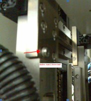

Technical Support Notes
Subject: Error T-4103 Motion Control Module initialization error
Handler Model: NS-7000 (S/N: 18825) Xilinx
Controller: RC520
Date: 17 May 2006
Symptom
Error T-4103 Motion Control Module initialization error upon going into MMI interface.
Error T-4103 Motion Control Module initialization error upon going into SPEL CT V3.0.
In SPEL CT,
- unable to use Jog & Teach Windows with SPEL error requesting to solve error first.
- on the bottom of screen, at the status bar, for Robot 1 the the Motor power status
- (On/Off) indicates Motor ? and Power status(Low/High) indicates Power ?.
- selecting other robot such as selrb2, selrb6 also indicates Motor ? and Power ? status, unable to Motor On for all robots.
Action
- In SPEL CT, check Hardware setting of individual Drive Unit, ok.
- Check external connectors/wiring between RC520 and DU1, ok.
- Check MIB1, MIB2 and MIB3 jumper setting, MIB2 jumper setting incorrect at JP4.
Cause
Incorrect jumper setting of JP4 on MIB2 in RC520.
Remarks
After solved for Error T4103, proceed to solve the errors below.
In SPEL CT, Error F-5041 Torque in the Low-power state when operating in Jog & Teach Windows when moving Index Arm 1 (Z Axis) down or in MMI, Error F-5040 Torque error in the High-power state during auto height calibration of index arm.
Note that during Handler Dry Run mode there was no F-5040 error, it only happened when doing auto height calibration of the index arm.
This was due to a loose M4x16 bolt which protruded out at the U Axis linear guide (Index Arm 2). The horizontal linear guide of Index Arm 1 to hit and jammed onto this loose bolt at certain point when Index Arm 1 is lower slowly down directly towards the Input Shuttle 1. When lowering Index Arm 1 towards the test site there was no problem.
The loose bolt was replaced and thread locker applied, the rest of the 5 bolts were checked and tightened.
